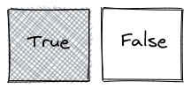
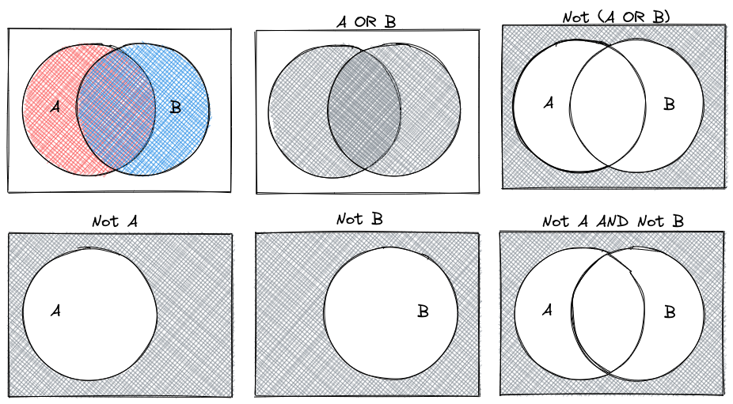
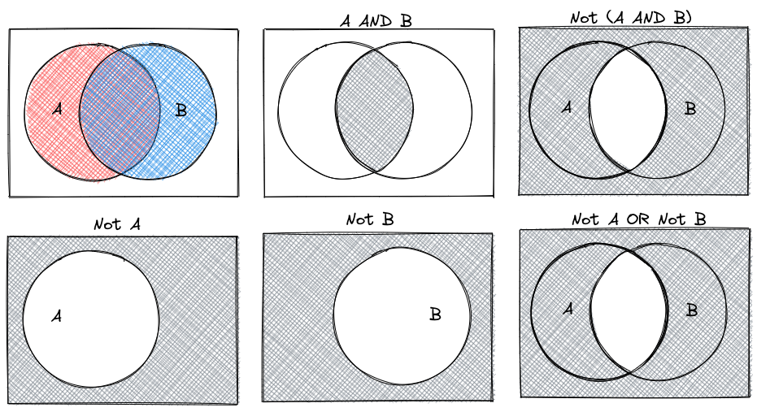
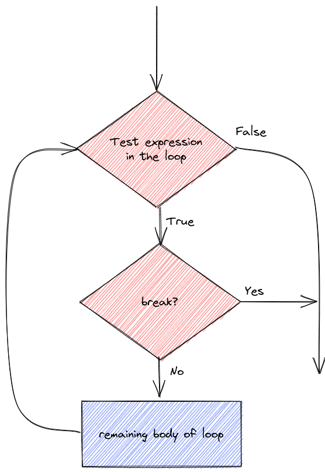
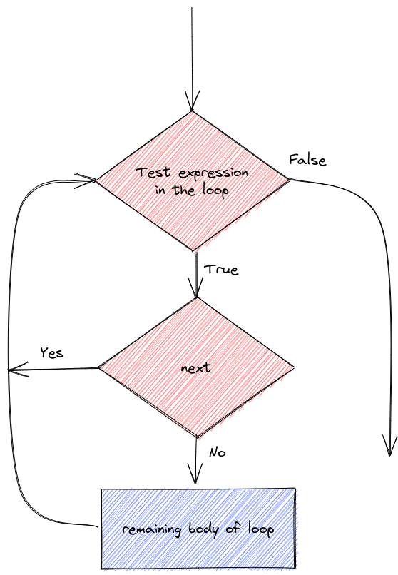

24 Other Topics
24.1 Mathematical Logic
In Chapter 9 and Chapter 11 we talk about more complicated data structures and control structures (for loops, if statements). I’ve included this section because it may be useful to review some concepts from mathematical logic.
Unfortunately, to best demonstrate mathematical logic, I’m going to need you to know that a vector is like a list of the same type of thing. In R, vectors are defined using c(), so c(1, 2, 3) produces a vector with entries 1, 2, 3. In Python, we’ll primarily use numpy arrays, which we create using np.array([1, 2, 3]). Technically, this is creating a list, and then converting that list to a numpy array.
24.1.1 And, Or, and Not
We can combine logical statements using and, or, and not.
- (X AND Y) requires that both X and Y are true.
- (X OR Y) requires that one of X or Y is true.
- (NOT X) is true if X is false, and false if X is true. Sometimes called negation.
In R, we use ! to symbolize NOT, in Python, we use ~ for vector-wise negation (NOT).
Order of operations dictates that NOT is applied before other operations. So NOT X AND Y is read as (NOT X) AND (Y). You must use parentheses to change the way this is interpreted.
import numpy as np
x = np.array([True, False, True, False])
y = np.array([True, True, False, False])
x & y
## array([ True, False, False, False])
x | y
## array([ True, True, True, False])
~x & y
## array([False, True, False, False])
x & ~y
## array([False, False, True, False])24.1.2 De Morgan’s Laws
De Morgan’s Laws are a set of rules for how to combine logical statements. You can represent them in a number of ways:
- NOT(A or B) is equivalent to NOT(A) and NOT(B)
- NOT(A and B) is equivalent to NOT(A) or NOT(B)

Suppose that we set the convention that .


24.2 Controlling Loops with Break, Next, Continue
Sometimes it is useful to control the statements in a loop with a bit more precision. You may want to skip over code and proceed directly to the next iteration, or, as demonstrated in the previous section with the break statement, it may be useful to exit the loop prematurely.
24.2.1 Break Statement

24.2.2 Next/Continue Statement

Let’s demonstrate the details of next/continue and break statements.
We can do different things based on whether i is evenly divisible by 3, 5, or both 3 and 5 (thus divisible by 15)
for (i in 1:20) {
if (i %% 15 == 0) {
print("Exiting now")
break
} else if (i %% 3 == 0) {
print("Divisible by 3")
next
print("After the next statement") # this should never execute
} else if (i %% 5 == 0) {
print("Divisible by 5")
} else {
print(i)
}
}
## [1] 1
## [1] 2
## [1] "Divisible by 3"
## [1] 4
## [1] "Divisible by 5"
## [1] "Divisible by 3"
## [1] 7
## [1] 8
## [1] "Divisible by 3"
## [1] "Divisible by 5"
## [1] 11
## [1] "Divisible by 3"
## [1] 13
## [1] 14
## [1] "Exiting now"for i in range(1, 20):
if i%15 == 0:
print("Exiting now")
break
elif i%3 == 0:
print("Divisible by 3")
continue
print("After the next statement") # this should never execute
elif i%5 == 0:
print("Divisible by 5")
else:
print(i)
## 1
## 2
## Divisible by 3
## 4
## Divisible by 5
## Divisible by 3
## 7
## 8
## Divisible by 3
## Divisible by 5
## 11
## Divisible by 3
## 13
## 14
## Exiting nowTo be quite honest, I haven’t really ever needed to use next/continue statements when I’m programming, and I rarely use break statements. However, it’s useful to know they exist just in case you come across a problem where you could put either one to use.
24.3 Recursion
Under construction.
In the meantime, check out [1] (R) and [2] (Python) for decent coverage of the basic idea of recursive functions.
24.4 Text Encoding
I’ve left this section in because it’s a useful set of tricks, even though it does primarily deal with SAS.
Don’t know what UTF-8 is? Watch this excellent YouTube video explaining the history of file encoding!
SAS also has procs to accommodate CSV and other delimited files. PROC IMPORT may be the simplest way to do this, but of course a DATA step will work as well. We do have to tell SAS to treat the data file as a UTF-8 file (because of the japanese characters).
While writing this code, I got an error of “Invalid logical name” because originally the filename was pokemonloc. Let this be a friendly reminder that your dataset names in SAS are limited to 8 characters in SAS.
/* x "curl https://raw.githubusercontent.com/shahinrostami/pokemon_dataset/master/pokemon_gen_1_to_8.csv > ../data/pokemon_gen_1-8.csv";
only run this once to download the file... */
filename pokeloc '../data/pokemon_gen_1-8.csv' encoding="utf-8";
proc import datafile = pokeloc out=poke
DBMS = csv; /* comma delimited file */
GETNAMES = YES
;
proc print data=poke (obs=10); /* print the first 10 observations */
run;Alternately (because UTF-8 is finicky depending on your OS and the OS the data file was created under), you can convert the UTF-8 file to ASCII or some other safer encoding before trying to read it in.
If I fix the file in R (because I know how to fix it there… another option is to fix it manually),
library(readr)
library(dplyr)
tmp <- read_csv("https://raw.githubusercontent.com/shahinrostami/pokemon_dataset/master/pokemon_gen_1_to_8.csv")[,-1]
write_csv(tmp, "../data/pokemon_gen_1-8.csv")
tmp <- select(tmp, -japanese_name) %>%
# iconv converts strings from UTF8 to ASCII by transliteration -
# changing the characters to their closest A-Z equivalents.
# mutate_all applies the function to every column
mutate_all(iconv, from="UTF-8", to = "ASCII//TRANSLIT")
write_csv(tmp, "../data/pokemon_gen_1-8_ascii.csv", na='.')Then, reading in the new file allows us to actually see the output.
libname classdat "sas/";
/* Create a library of class data */
filename pokeloc "../data/pokemon_gen_1-8_ascii.csv";
proc import datafile = pokeloc out=classdat.poke
DBMS = csv /* comma delimited file */
replace;
GETNAMES = YES;
GUESSINGROWS = 1028 /* use all data for guessing the variable type */
;
proc print data=classdat.poke (obs=10); /* print the first 10 observations */
run; This trick works in so many different situations. It’s very common to read and do initial processing in one language, then do the modeling in another language, and even move to a different language for visualization. Each programming language has its strengths and weaknesses; if you know enough of each of them, you can use each tool where it is most appropriate.